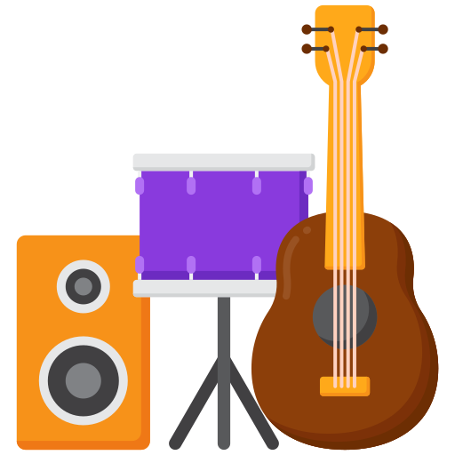

Por meio de aulas práticas e teóricas, o aluno aprende a arquitetar estruturas de softwares e sistemas, além de estudar as mais variadas e modernas linguagens da programação, seguindo sempre as normas técnicas vigentes.
GEOGRAFIA
Basicamente o aluno estuda a Terra e sua ocupação pelo homem. Porém, seus estudos não se limitam à geografia física (clima, relevo e vegetação), eles se estendem também à análise da relação entre as populações e o ambiente em que vivem.

Música
Diferente do que muitas pessoas acreditam, as aulas de canto vão muito além de apenas aprender a cantar de forma mais afinada. Com a evolução do canto, treinar o vocal é cada dia mais importante, principalmente para quem deseja seguir carreira com isso.
A dança, embora seja uma disciplina artística, é acima de tudo um esporte. Então você tem que aprender a preparar seu corpo antes de esticá-lo em todas as direções com ritmo e criatividade.
Tocar instrumentos musicais, principalmente os que envolvem uma quantidade maior de movimentos em conjunto como bateria, violão e piano, também aumenta a coordenação motora. Inclusive, essa é uma prática muito recomendada para o tratamento de doenças neurológicas e neurodegenerativas.
MATEMÁTICA
Eles já aprenderam a base dos números decimais, sabem contar na ordem crescente e decrescente, fazer frações, porcentagens, cálculos de subtração, adição, multiplicação e divisão. Além disso, conhecem as principais figuras geométricas. A partir do 6º ano, as bases da matemática começam a ficar mais complexas
PORTUGUÊS
Aprendemos a classe gramatical das palavras: verbo, sujeito, artigo, adjetivo, advérbio, pronome, numeral, preposição, conjunção, interjeição... Sem contar com as redações, interpretações de texto, literatura, escolas literárias, ortografia, regência, conjugação, pontuação, acento...
IDIOMAS
Aprende novos idiomas como inglês e espanhol.
QUÍMICA
A Química é uma ciência que estuda a natureza da matéria. É importante ressaltar que tudo o que nos cerca é matéria, podendo ser sólida, líquida ou gasosa. Veja um exemplo: Na fotossíntese de uma planta, ela absorve a luz e a transforma em energia.
ARTES
O estudo da arte é importante porque auxilia no desenvolvimento de diversas habilidades, dentre elas: Foco e concentração; Criatividade; Disciplina; Percepção; Senso crítico; Improvisação; Comunicação; Integração social; Imaginação;